Your table's sheets, loot and lore, inside Discord.
Shadowdark Bot keeps every player's character sheet and the guild's shared stuff in one place: the stash, the coffers, the magic item treasury, the spell list and the creatures you've met. Use it with slash commands in any channel, or open the full sheet as a Discord Activity.
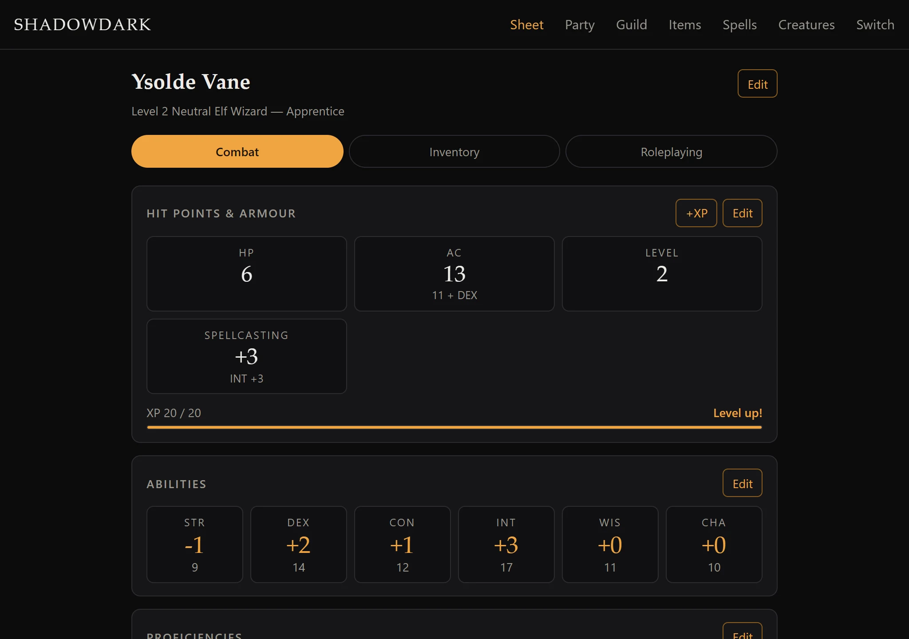
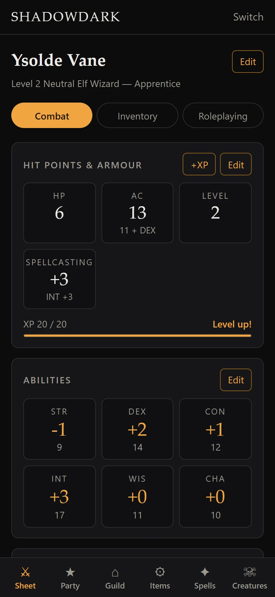
⚔Character sheets
Stats, abilities, spells, effects, gold and gear slots for every player, editable by the owner.
⌂Guild storage
Shared stashes with gear-slot capacity. Anyone can donate, and anyone with a character can take.
✦Magic item treasury
Magic items are borrowed and returned, never given away. Everyone can see who has what.
◉Coffers & catalog
One shared purse in gp/sp/cp and an item catalog to buy from, priced the way you set it.
☠Spells & creatures
The full Shadowdark spell reference, plus a bestiary of what the party has met and when.
★Dungeon Master mode
Whoever holds your DM role can open and edit any player's sheet.
Get the bot into your server
You need a Discord application, somewhere to run the bot, and a few settings. The bot alone gives you every slash command. The web sheet and the Activity are optional extras.
- 1
Create the Discord app
Get a bot token and invite the bot to your server.
- 2
Run the bot
One command on Proxmox, or Docker Compose anywhere.
- 3
Settings
What goes in
.env, from the token to the web sheet. - 4
Turn on the Activity
Open the sheet inside Discord. Optional.
- 5
Choose your DMs
Let a Discord role edit every sheet. Optional.
- 6
Try it without Discord
The sample party on your own machine.
Create the Discord app
- Open the Discord Developer Portal, click New Application and name it.
- Under Bot, leave every privileged intent off, then Reset Token and copy the token. That's your
DISCORD_TOKEN. Keep it secret. - Under OAuth2 → URL Generator, tick the
botandapplications.commandsscopes. Then tick the Send Messages, Embed Links, Read Message History and Use Slash Commands permissions. Open the URL it gives you and pick your server.
No server ID or role ID is needed for the basics: the bot finds every server it's in and registers its commands there when it starts.
Run the bot
On Proxmox (recommended): one command on the Proxmox host makes a small Debian container with Docker, clones the bot, asks for your token and starts it.
bash <(curl -fsSL https://raw.githubusercontent.com/bunnyUFO/shadow-dark-bot/main/scripts/install-proxmox.sh)Anywhere with Docker:
git clone https://github.com/bunnyUFO/shadow-dark-bot.git
cd shadow-dark-bot
cp .env.example .env # then set DISCORD_TOKEN
docker compose up -d --buildWhen the log shows Synced N command(s) to guild …, type /ping in your server. It answers pong. The full install, update and backup guide is in docs/deploy-proxmox.md.
Settings
Everything lives in the bot's .env file (see .env.example). After a change, restart the bot with docker compose up -d. A plain restart keeps the old settings.
| Setting | What it's for |
|---|---|
DISCORD_TOKEN | Required. The bot token from step 1. |
LOCAL_WEB_ENABLED | true serves the sheet on your home network (port 8081). There's no login: you pick your character. |
WEB_ENABLED | true serves the public sheet with Discord login (port 8080, behind your reverse proxy). This is what the Activity uses. |
PUBLIC_BASE_URL, DISCORD_CLIENT_ID, DISCORD_CLIENT_SECRET, SESSION_SECRET | Needed for the public sheet: its address, the app's OAuth2 ID and secret, and a long random string that signs logins. |
ALLOWED_GUILD_IDS | Server IDs whose members may log in to the public sheet. |
FORWARDED_ALLOW_IPS | Your reverse proxy's IP, so the public sheet trusts its headers. Never *. |
DM_ROLE_IDS | Discord role IDs whose holders are Dungeon Masters. |
Turn on the Activity
The Activity is the web sheet opened inside Discord. Once the public sheet is running at your address, set up these pages of the Developer Portal:
- Activities → enable. This adds the Launch entry point.
- URL Mappings → map
/to your sheet's domain. - OAuth2 → add the redirect
https://<your domain>/auth/callbackso the standalone website can log in too. - App Testers → invite each player. Each player has to accept the invite.
Heads up: an unverified Activity launches only for the app's owner and up to 50 App Testers, and only in servers with fewer than 25 members. The standalone website at your domain works everywhere.
Choose your Dungeon Masters
Pick a Discord role, such as the one your game masters already have (for example game master). Everyone who holds it can edit every character's sheet. It takes one setting and a restart.
1. Copy the role's ID
The bot needs the role's ID, not its name. Turn on Developer Mode first. It's a setting in your own Discord app, so it needs no server permission:
- Desktop or browser: User Settings (the gear at the bottom left) → Advanced → Developer Mode.
- Phone: your profile → the gear → Advanced → Developer Mode.
Then copy the ID in whichever way works for you:
- With Server Settings access: open Server Settings → Roles, right-click the role (or click its ⋯) and choose Copy Role ID.
- Without admin access: click a member who has the role, right-click the role's tag in their profile and choose Copy Role ID.
- Without Developer Mode: send
\@RoleNamein a channel. The message shows<@&123456789012345678>, and the number is the role ID. This only works for a role you're allowed to mention.
A role ID isn't secret, so a server admin can also just send it to you.
2. Add it to the bot and restart
Put the ID in the bot's .env. Separate several roles with commas.
DM_ROLE_IDS=123456789012345678Then restart from the bot's folder. A plain docker compose restart keeps the old settings, so use:
docker compose up -d3. Log in again
- Slash commands: work straight away, because the role is checked on every button press.
- Website: the DM logs out and back in. The role is checked at login, and a login lasts up to
SESSION_TTL_HOURS(12 hours by default). - Activity: it has no Log out button and can keep its old login until that expires. For DM access straight away, use the website.
Removing the role works the same way: it takes effect at once in slash commands, and at the next login on the website and in the Activity.
To check it worked, open Party. As a DM it says you can edit any character, and another player's sheet opens under an "Editing … as Dungeon Master" banner. DM mode shows what a DM can do.
If it doesn't work
"Only a Dungeon Master can edit someone else's character" means the bot didn't find the role. Check these:
- The ID in
.envis a role ID, not a user or server ID. - The bot was restarted with
docker compose up -d. - The person holds the role in the server the role belongs to, and the bot is in that server.
- They logged in again after the change.
More than one server
One bot, one set of characters. Every server the bot is in shares the same database. If the bot is also in a test server, a DM edit made there changes the real characters. To try DM mode safely, use the dev runner (step 6).
- A role ID belongs to one server, so a role with the same name in another server is a different role. List only your real game's role.
- A listed role counts in any server the bot is in, even one missing from
ALLOWED_GUILD_IDS. Whoever holds it there is a DM on the website and in the Activity, for every character. - The home-network sheet has no password. Anyone on your network who picks a DM's character gets that DM's editing rights there.
Try it without Discord
The repo has a dev runner that serves the sheet on a seeded sample party. It needs no token and never touches the real database:
py -3.12 -m venv .venv && source .venv/Scripts/activate
pip install -e ".[dev]"
python -m shadowdark_bot.dev --reset --dm 900000000000000001Open http://localhost:8081 and pick a character. --dm makes Brannoc a Dungeon Master so you can try DM mode.
Slash commands
Every reply is visible only to you, with a Share with channel button to post a public copy. The guild commands each have a browse view where you can list, inspect and act in one place. Start there if you're not sure which command to run.
/character
Your own player character: open, edit and show sheets.
/items
The guild's item catalog: what every item is and costs.
/inventory
Shared, non-magical stashes with gear-slot capacity.
/coffers
The guild's shared purse, and buying from the catalog.
/treasury
Magic items, borrowed and returned.
/spells
The Shadowdark spell reference.
/character
Your own player character.
Opens your interactive sheet with three tabs:
- Combat: HP, AC, abilities, spellcasting, proficiencies and spells, with Manage Spells.
- Inventory: gold, carried items and your stash, with Manage Held, Manage Stash and Give.
- Roleplaying: identity, background, languages, talents, and Delete.
If you don't have a character yet, a Create character button starts one. DM Dungeon Masters can name a member to edit that player's character instead.
/character sheet · /character sheet member:@TessaAdds an item you're carrying. A catalog name links the item. Any other name makes a freeform item, and gear_slots sets how many slots each one takes. Capacity is max(10, STR) gear slots.
/character carry item:Arrows quantity:20Shows another player's sheet, read-only. Only their held items are listed; the stash stays private. Dropdowns let you inspect a spell or an item in place.
/character show member:@Tessa/items
The guild's item catalog. Every item has a type (common, weapon, armor, scroll, potion, loot, crafted or magical), gear slots and a bundle size. For example, 20 arrows fit in one slot.
Lists the catalog, grouped by type. Pick an item to see it, then press Edit to change it.
Adds a new item to the catalog.
/items add name:Arrows type:common bundle_size:20 sp:1Look up an item, edit it in a pre-filled form, or remove it if nothing uses it any more.
/inventory
Shared, non-magical stashes, each with its own gear-slot capacity.
Pick a location, then an item. + Add more and − Take work right there; taking puts the item in your character's held items.
Puts a catalog item into a location. Same items stack, and capacity is checked bundle by bundle.
/inventory add location:"Main Stash" item:Arrows quantity:15Make, resize or remove storage locations, such as a main stash or a lakeside cabin, each with its own gear-slot capacity.
/coffers
The guild's shared purse, in gp, sp and cp.
Shows the balance and a dropdown of catalog items that have a price. Pick one and a quantity to buy it with guild money.
Pay in or take out. The balance can't go below zero.
/coffers add gp:120 reason:"dungeon haul"/treasury
Magic items belong to the guild. They're borrowed and returned, never given away.
Lists available and borrowed items. Pick one to Borrow for me, borrow for someone else, or Return it. A borrowed item also shows up in the borrower's carried gear.
Registers a magic item. Each physical copy is tracked separately, and tag tells duplicates apart. You can only remove items that aren't borrowed.
/spells
The Shadowdark spell reference, for anyone to look things up.
Filter every Tier 1–5 wizard and priest spell, then open one for its duration, range and text.
Jumps straight to one spell, with autocomplete.
/spells info spell:"Magic Missile"The full sheet, inside Discord
Start the Activity from Discord's App Launcher in any channel, or open the same sheet as a website in your browser. It signs you in with Discord, so you always land on your own character. On phones the sections move to a tab bar at the bottom.
Character sheet
Combat, Inventory and Roleplaying tabs.
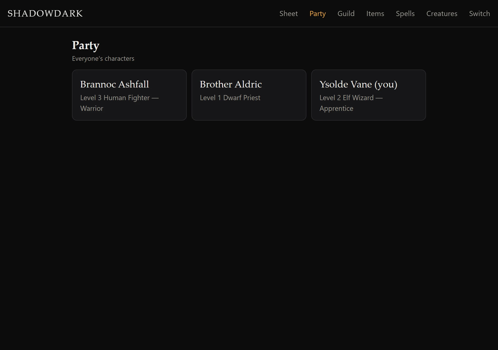
Party
Everyone's characters, read-only.
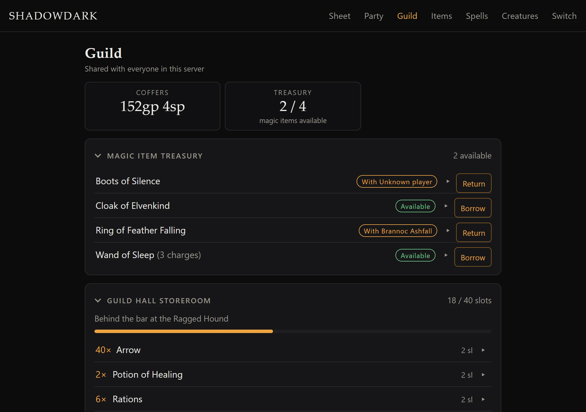
Guild
Coffers, storage and the treasury.
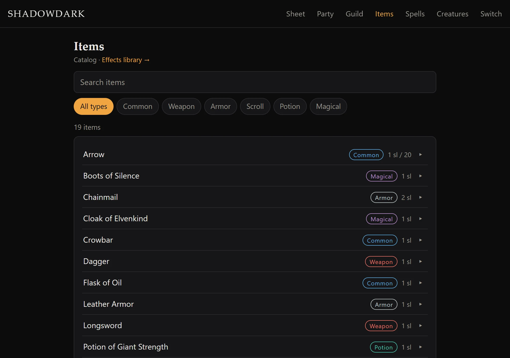
Items
The catalog, and buying from it.
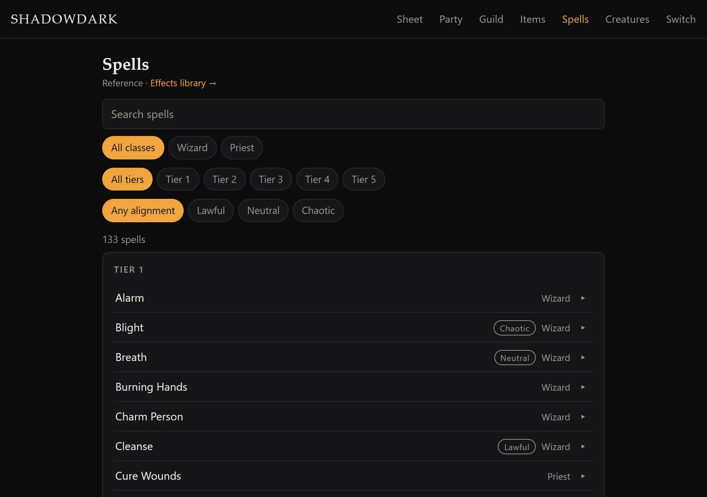
Spells
The full spell reference.
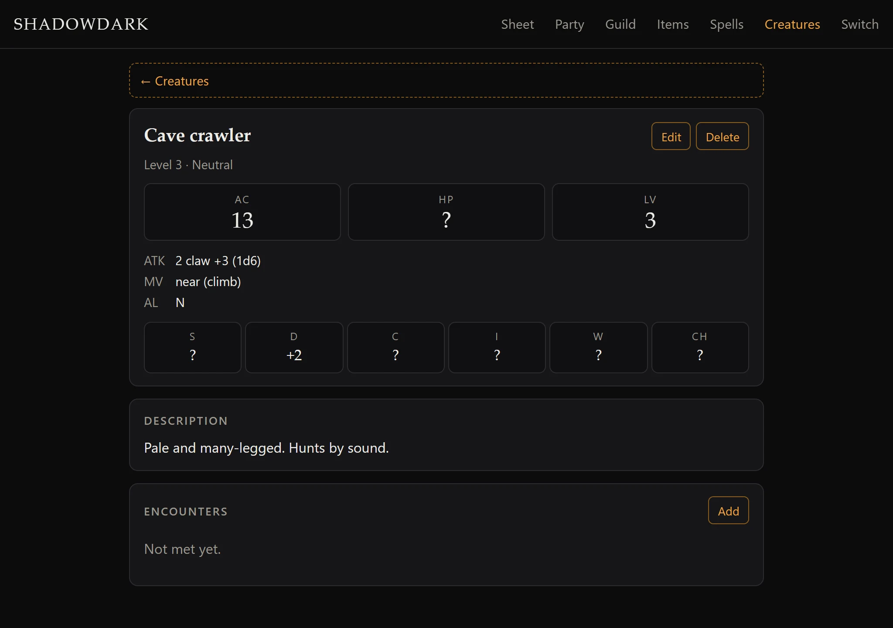
Creatures
The bestiary and the effects library.
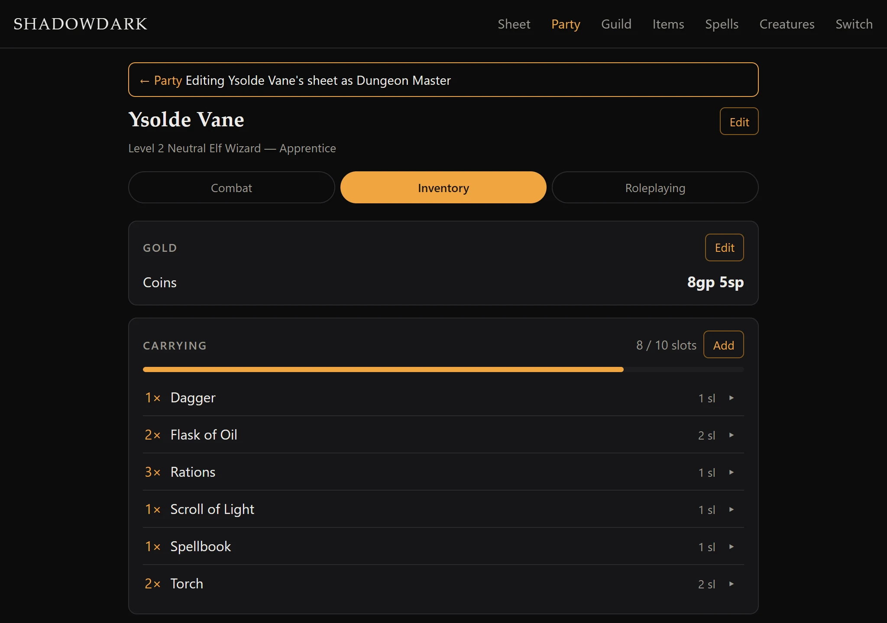
DM mode DM
Edit any player's sheet.
Character sheet
Your sheet in three tabs. Every card has its own Edit, and changes save straight away.
- Combat:
- HP, AC (base + DEX), level and spellcasting, with an XP bar and a +XP button.
- The six abilities and your proficiencies.
- Spells: tick a spell off when it's lost, then Rest to get them back. Learn and Forget spells here too.
- Effects: things like Light or Bless, with round boxes to tick down.
- Inventory: gold, the items you carry (max(10, STR) gear slots) and your 10-slot stash. Open an item to Stash/Take it, Give it to someone, Drop it or Edit it.
- Roleplaying: background, languages, talents and anything else worth remembering.
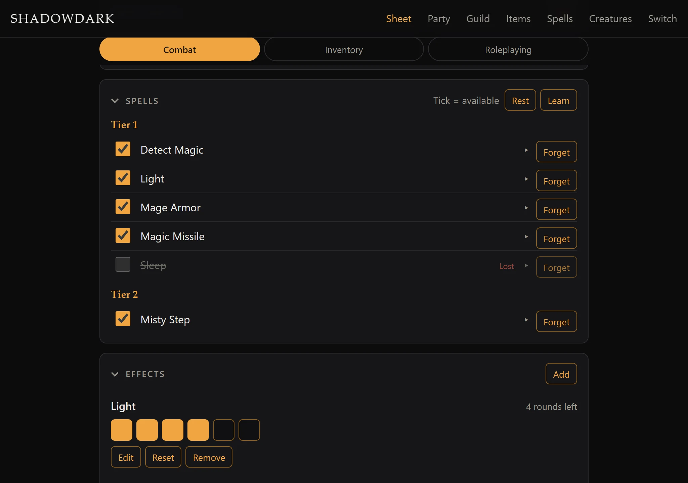
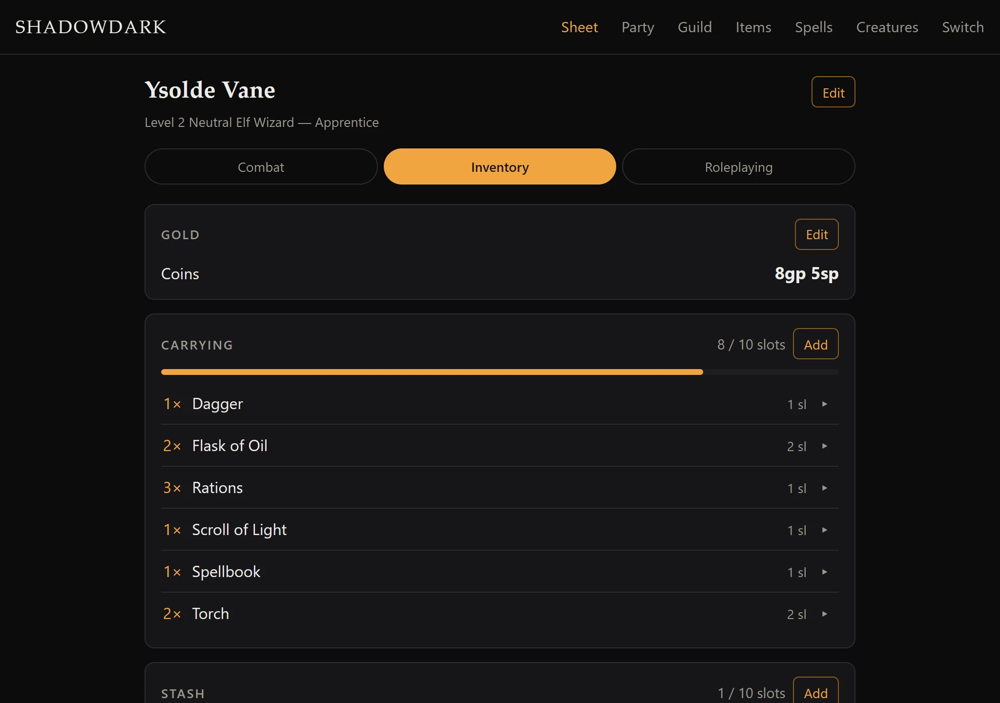
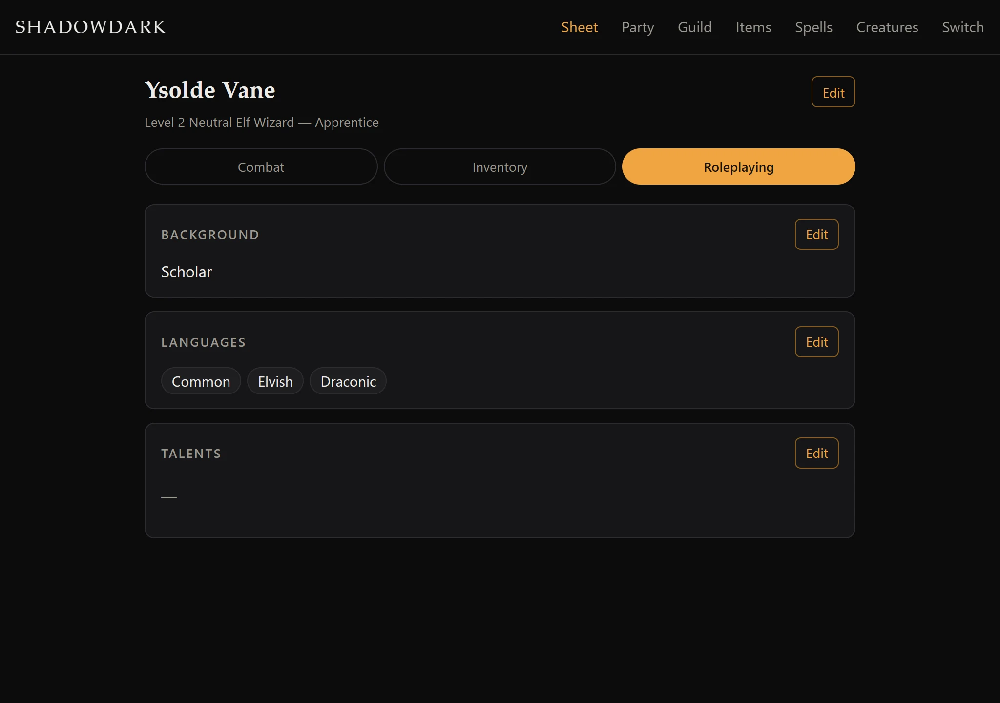
Party
Everyone's characters at a glance. Open one to read their sheet: the same tabs, read-only. Only their held items are listed; stashes stay private.
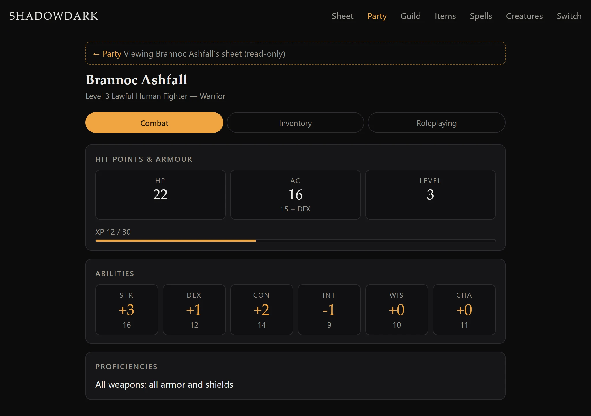
Guild
Everything the guild shares.
- The coffers.
- Every storage location and what's in it. Take an item into your carried gear or stash.
- The magic item treasury, showing who has each item. Borrow one for yourself, another character or anyone by name, and Return it, whoever borrowed it.
Items
The guild's catalog, with a search box and a type filter. Buy an item with your own gold or the guild coffers, and put it in your gear, your stash or a guild location. An item that causes an effect, like a potion, links to it.
Spells
The complete Shadowdark spell list. Filter by class, tier and alignment, or search by name, then open a spell for its duration, range and full text. Spells that cause an effect link to it, ready to apply to a character.
Creatures
A bestiary of what the party has met. Each creature has a Shadowdark-style stat block: AC, HP, level, attacks, movement, alignment and ability modifiers. Anything you haven't found out yet shows as ?.
Log each encounter with its date, session, place and what happened. Anyone can add, edit or delete.
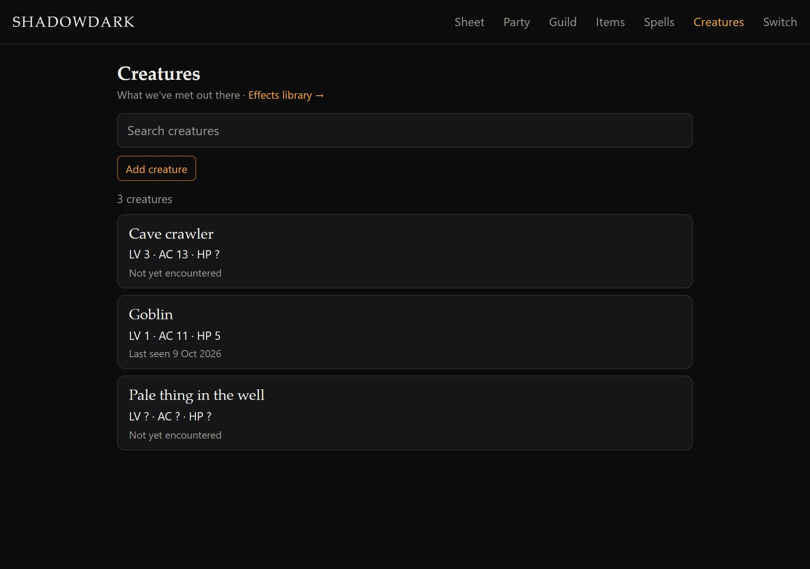
The effects library
It sits alongside the bestiary and holds reusable effects with a duration and stat changes, each linked to the items, spells and creatures that cause it. Apply one to yourself or a party member and it lands on their Combat tab.
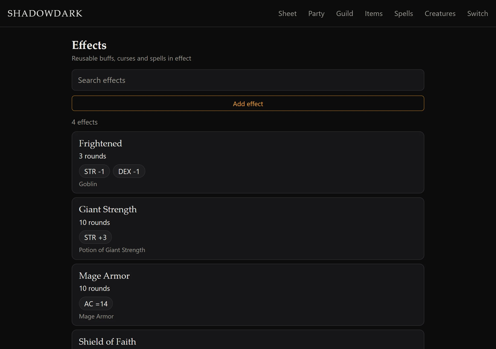
DM mode DM
Anyone holding a role in DM_ROLE_IDS is a Dungeon Master (see Setup). Everyone else edits only their own character.
- In the Activity and on the website: open a player from Party to get their whole sheet, stash included, with every edit button. A banner says whose sheet you're editing. The home-network sheet works the same way once you've picked your own character.
- In Discord:
/character sheet member:@playeropens that player's interactive sheet for you. Anyone else who tries is politely refused. - DMs can change anything on an existing character, including deleting it. They can't create a character for someone who hasn't made one.
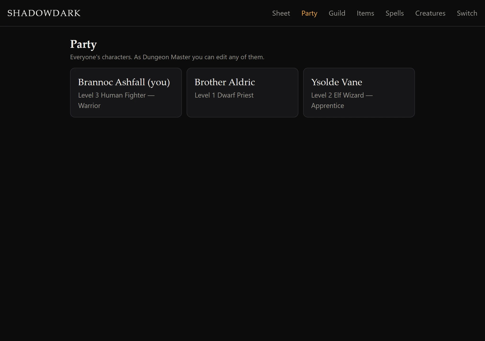